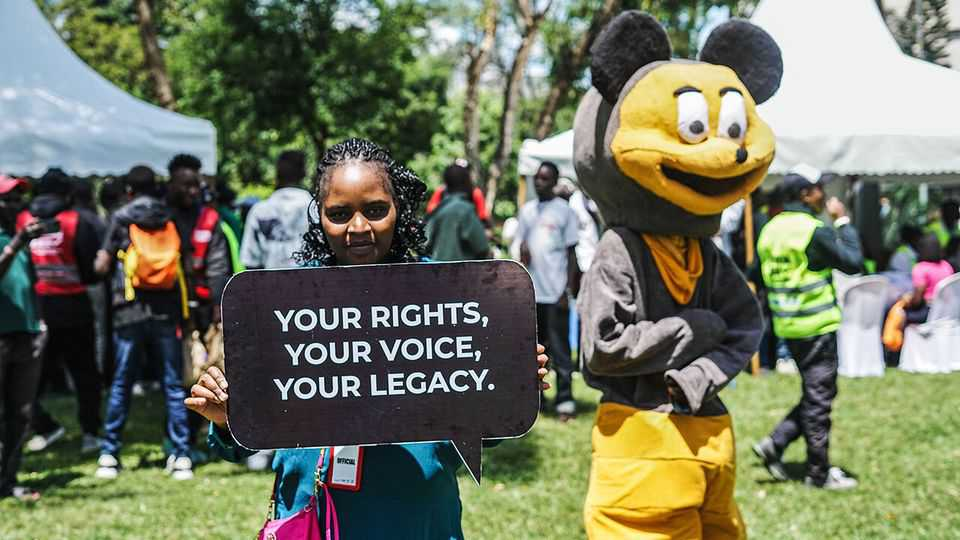

Gen-Z Kenyans could determine William Ruto’s future
Young activists hope to deny the unpopular president a second term next year

Oct 15th 2026
At the start of this year Allans Ademba, a 26-year-old Kenyan photojournalist, was despondent. A mass uprising against William Ruto, Kenya’s president, which began in 2024 seemed to be fizzling. Protesters' main goal—that the beleaguered Mr Ruto should serve just one term or less—looked remote. After years of falling living standards, “most people were very politically conscious,” Mr Ademba recalls. Yet in the general election in 2027, “nobody was registering” to vote.
A few months later the mood is strikingly different. In March Mr Ademba launched “Niko Kadi”, or “I have my card” in Sheng, the local Swahili-English slang. The viral campaign seeks to get millions of young Kenyans voting in 2027 for the first time. Mr Ademba and his fellow Gen-Z organisers helped register 2.6m new voters in a single two-week period this year (22m people could vote in the last election). Now they are preparing an even more ambitious mass registration drive: enlisting young Kenyans not only to vote but to run for office. The impact on what is expected to be a vicious election could be decisive.
Niko Kadi blends modern online campaigning with more traditional get-out-the-vote efforts. The movement began on social media, notably on TikTok, where activists post cheery videos urging fellow youngsters to collect their voter id cards. Alongside practical advice, such as where and how to register, are jokier tips, such as telling young women to dump their boyfriends if they fail to sign up.
“We found a way to make politics fun, trendy, fashionable—and to some extent sexy,” says Mr Ademba. He attributes much of their success to scores of local groups on WhatsApp, a messaging app. These have helped young Kenyans from across the country spread the word and head to registration centres together.
Activists hope that the newly registered voters will turn out—and vote against Mr Ruto. Kenya’s Gen-Z protests began as a tax revolt before becoming a display of the “power of the youth to organise and put pressure on the state”, says Mwanase Ahmed of the Pan-African Solidarity Network, a pressure group. But because the state has since cracked down on demonstrations, formal politics are now more important. By one count 6m more young Kenyans will be eligible to vote next year than in the last election in 2022. Many are furious with Mr Ruto because of his repressive tactics and because he came to power on a pro-youth programme which he has failed to deliver. This makes them potential “kingmakers or kingbreakers”, says Martins Kwazema of the Nordic Africa Institute in Sweden.
There are also big challenges. Young Kenyans are a politically engaged bunch; 57% report reading the news frequently on social media, according to Afrobarometer, a pollster. A new study by University College London finds widespread awareness of new laws and policies even among rural youngsters. Yet self-reported turnout among Kenya’s young has been in decline since at least 2013. One estimate put turnout in 2022 among 18- to 25-year-olds at under 40%; overall it was 64%.
Could Niko Kadi buck the trend? Mr Ruto has welcomed the growth in voter registration. But as Ken Opalo, a prominent Kenyan academic, has argued, widespread antipathy towards his administration means the president stands the strongest chance of re-election if turnout is low. Activists therefore expect the state to throw everything it has at them.
Mr Ademba himself was briefly arrested during a registration drive in July. As the election approaches, activists worry most about goons: armed thugs hired by officials to intimidate opponents and terrorise protesters. Under Mr Ruto Kenya has suffered a surge in such violence.
Despite their shared anger at Mr Ruto, young Kenyans do not yet agree on who should replace him. Failure to unite around a single candidate could hand Mr Ruto victory. Legions of enthused young voters would be a sign of democratic health. But they offer no guarantee of change. ■
Sign up to the Analysing Africa, a weekly newsletter that keeps you in the loop about the world’s youngest—and least understood—continent.